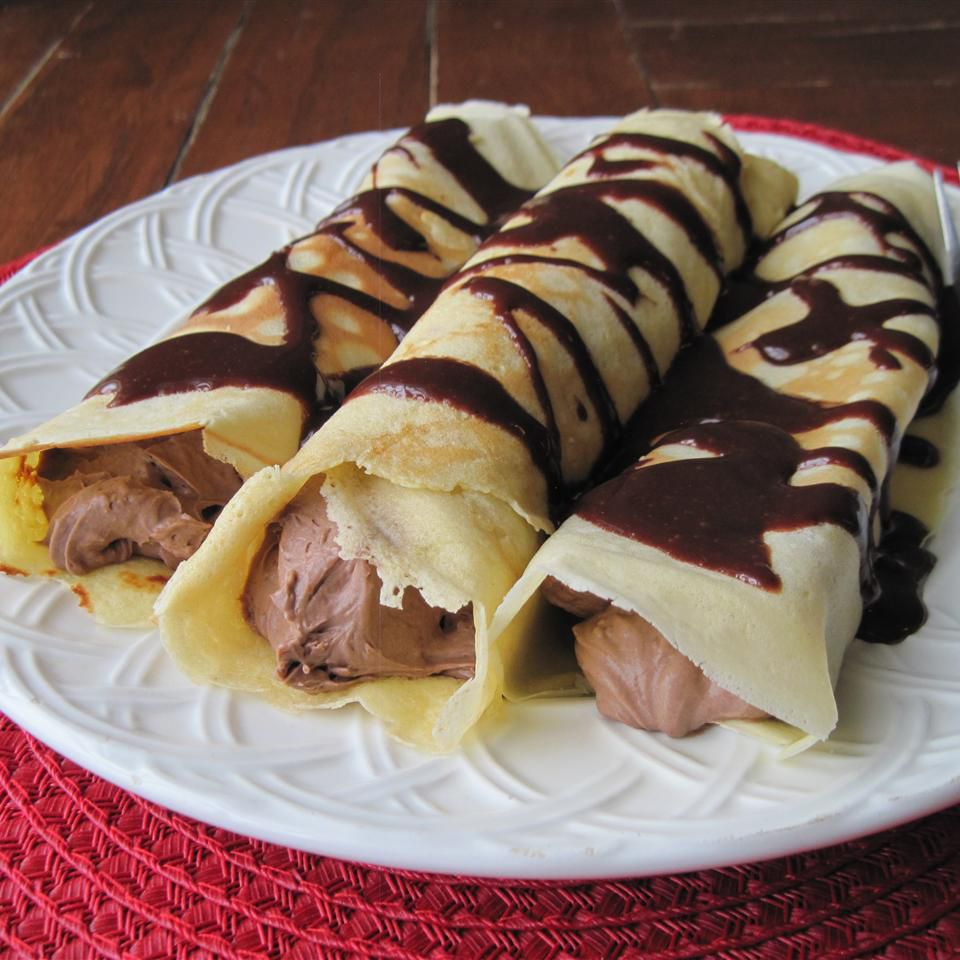

Chocolate Crepes
Main Page

Description
Chocolate cream rolled inside a paper thin layer of batter
- 2 Eggs
- ½ cup milk
- ½ cup water
- ¾ cup all-purpose flour
- 6 teaspoons white sugar
- ⅓ tablespoon butter or margarine
- 1 fluid ounce cognac
- 1 (3.9 ounce) package instant chocolate pudding mix
- 1 teaspoon instant coffee granules
- 3 cups heavy cream
- 4 (1 ounce) squares bittersweet chocolate
- ½ cup butter or margarine
- 1 ¼ cups nonfat evaporated milk
- 2 ½ cups confectioners' sugar
Directions
- Crepe batter: in a large bowl, mix together eggs, milk, water, flour, sugar, 1 teaspoon butter, and cognac.
- Filling: beat pudding mix, instant coffee and whipping cream together with an electric mixer until the mixture is thick.
- Sauce: in a small saucepan, melt the chocolate, butter, evaporated milk, and confectioners' sugar together until the mixture is a little thick.
- Crepes: heat a small skillet (or crepe pan) to a high temperature. Place a small amount of batter into the skillet and swirl it around until the
batter covers the bottom of the pan. When the crepe is slightly browned flip the crepe over and let the other side brown for a few seconds.
The first crepe will most likely not turn out well, but the rest will. Stack the crepes on top of each other to let tem cool before filling.
- Spoon the filling into the center of each crepe and roll the crepe up around it. Spoon the sauce over the crepes and serve.